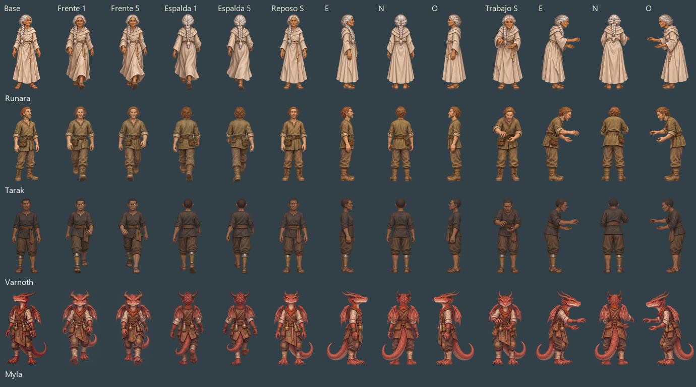
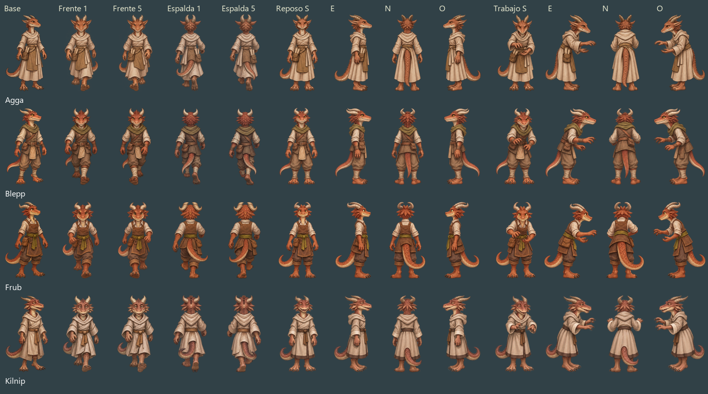
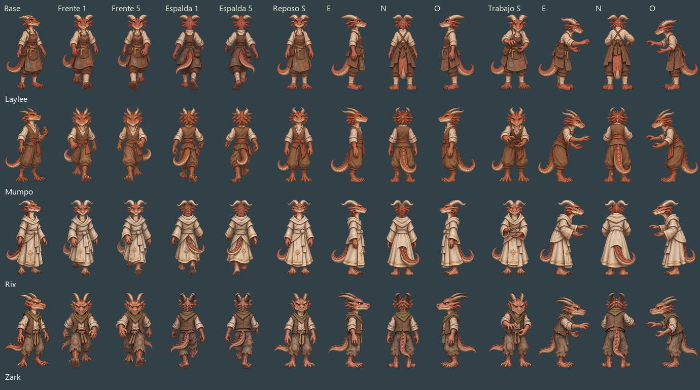

Rutinas del Retiro del Dragón
Seis tareas por habitante entre el día, el atardecer y la noche. Las rutas usan el suelo, los peldaños y las puertas del mapa. Las actividades cotidianas son una adaptación original de las personalidades del capítulo 1, pp. 8–12.
Dentro de Godot
Pulsa una captura para alternar entre reposo y acción. Cada par usa la misma cámara y resolución. Los dos ángulos de cada tarea conservan la orientación del personaje hacia el objeto.
Tarak riega el jardín · vista delanteraMostrando antes. Pulsa la imagen para superponer el después; vuelve a pulsar para regresar.
Tarak riega el jardín · vista traseraMostrando antes. Pulsa la imagen para superponer el después; vuelve a pulsar para regresar.
Runara consulta el códice · vista delanteraMostrando antes. Pulsa la imagen para superponer el después; vuelve a pulsar para regresar.
Runara consulta el códice · vista traseraMostrando antes. Pulsa la imagen para superponer el después; vuelve a pulsar para regresar.
Habitantes
Runara
- Día · Consulta el códice del claustro
- Día · Copia una nota en el scriptorium
- Día · Revisa la carta de la isla
- Atardecer y Noche · Medita junto al altar
- Atardecer · Llama a los canarios del templo
- Noche · Ordena las ofrendas del claustro
Ver lámina original
Tarak
- Día · Examina los brotes y las hojas
- Día · Riega las hierbas del claustro
- Día · Saca agua fresca para el jardín
- Atardecer · Añade hierbas al guiso
- Atardecer · Sirve un cuenco de guiso
- Noche · Clasifica hierbas en su estante
Ver lámina original
Varnoth
- Día · Limpia la piedra del templo
- Día · Comprueba las juntas del pórtico
- Día · Se aparta para dejar posarse a las aves
- Atardecer · Relee un pasaje de historia
- Atardecer · Se detiene a comentar una lectura
- Noche · Limpia el escudo que guarda en la celda
Ver lámina original
Myla
- Día y Noche · Comprueba el engranaje del taller
- Día · Comprueba el cierre del alambique
- Día y Noche · Separa las piezas de repuesto
- Atardecer · Estudia un dibujo de la biblioteca
- Atardecer · Mide un ángulo con el astrolabio
- Noche · Demuestra un montaje a Laylee
Ver lámina original
Agga
- Día · Tensa la lona de la hamaca común
- Día · Revisa los víveres con la celda en calma
- Atardecer y Noche · Reparte los recados de la noche
- Atardecer y Noche · Comprueba que el umbral quede libre
- Atardecer · Deja preparada la jarra común
- Noche · Cuenta los vasos de la plaza
Ver lámina original
Blepp
- Día · Escucha ruidos al otro lado de la celda
- Día · Prueba la tensión de la hamaca
- Atardecer y Noche · Vigila el descenso hacia la playa
- Atardecer y Noche · Se acerca al borde del camino y mira la marea
- Noche · Comprueba la cuerda del pozo
- Atardecer · Revisa el cesto antes de bajar a pescar
Ver lámina original
Frub
- Día · Acomoda la lona de la hamaca
- Atardecer · Pregunta a Agga por el siguiente recado
- Atardecer y Noche · Devuelve un vaso a la mesa
- Noche · Sube un cubo de agua
- Atardecer · Alinea un leño en la pila
- Noche · Revisa si quedan suministros para el taller
Ver lámina original
Kilnip
- Día · Acomoda la lona antes de intentar dormir
- Día · Hace compañía a Blepp en la celda
- Atardecer · Prueba el guiso y comenta la cena
- Atardecer · Acerca el pan a un comensal
- Noche · Sirve un poco de bebida
- Noche · Se despeja un momento en el umbral
Ver lámina original
Laylee
- Día · Tensa su hamaca antes de salir
- Atardecer · Limpia una herramienta de mano
- Atardecer · Prueba el engranaje frío
- Noche · Extiende un plano para tomar medidas
- Noche · Cuenta las piezas del montaje
- Noche · Se prepara para ayudar a Myla
Ver lámina original
Mumpo
- Día · Endereza la lona de su hamaca
- Día · Comprueba el cierre de un baúl
- Atardecer · Se asoma al mirador del camino
- Atardecer y Noche · Recorre el tramo este de la galería
- Noche · Retoma su discusión con Zark en la plaza
- Noche · Prueba cuánto pesa el torno del pozo
Ver lámina original
Rix
- Día · Alinea la vasija del altar de la celda
- Atardecer y Noche · Ofrece incienso en el altar
- Atardecer · Acomoda el cuenco de ofrendas
- Noche · Hace una pausa de recogimiento
- Atardecer y Noche · Revisa el paso antes de la oración
- Noche · Llama en voz baja a los canarios
Ver lámina original
Zark
- Día · Sacude la lona de su hamaca
- Día · Revisa el cierre del baúl de la celda
- Atardecer y Noche · Inspecciona el umbral por si queda algún trasto
- Atardecer · Aparta un vaso que estorba
- Noche · Coloca la jarra en su sitio
- Noche · Vuelve a discutir con Mumpo en la plaza
Ver lámina original
Revisión
Se integraron 328 imágenes, repartidas en 29 secuencias de ocho fotogramas y 96 poses direccionales fijas. Los gestos específicos se reproducen desde sus vistas dibujadas. Los demás ángulos utilizan la pose de trabajo de la dirección correspondiente.
Se comprobó el contacto de las 72 tareas, la colaboración en el taller y la orientación con cámara giratoria. Algunas acciones reutilizan un gesto de trabajo. Las hamacas se ajustan mediante el movimiento de la lona. El descanso tumbado sigue pendiente.


